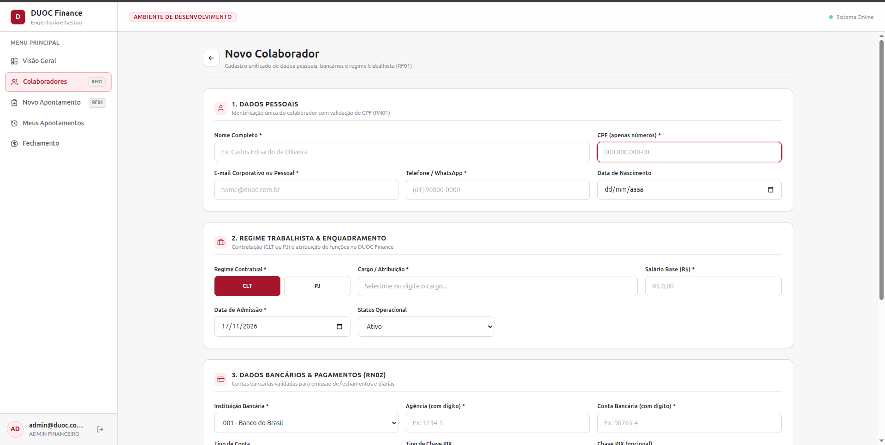
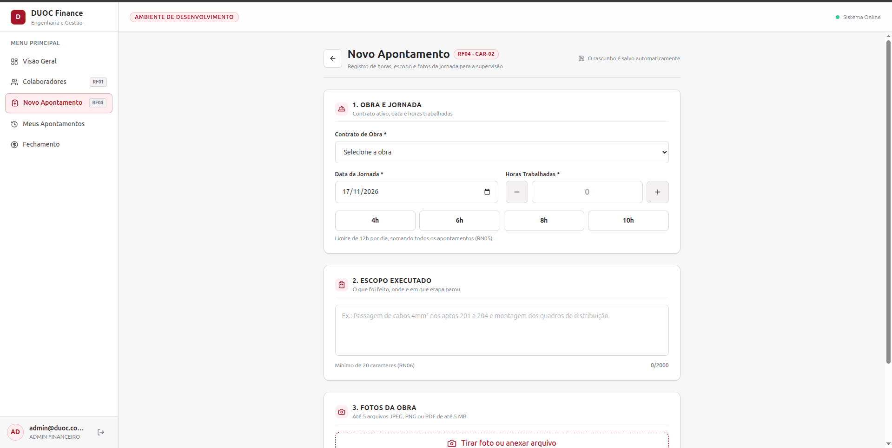

Definition of Ready (DoR) — Acordos e Resultados por Incremento¶
O DoR é o acordo de prontidão para iniciar a construção da lógica de negócio e da persistência definitiva de cada item do backlog. No ciclo RAD UI-First da equipe Cascata Ágil, a prototipação do frontend e a validação visual com a cliente Maria Beatryz acontecem antes da passagem pelo portão DoR.
Para consultar os critérios de saída e conclusão, acesse Definition of Done (DoD).
1. Checklist Operacional de Entrada (Critérios Oficiais)¶
| Verificação | Pergunta de Controle | Evidência Esperada |
|---|---|---|
| Problema e escopo claros | Está claro quem precisa da funcionalidade, qual problema operacional resolve e o que está fora do escopo? | História e descrição da Issue revisadas; termos alinhados. |
| Sem ambiguidades impeditivas | Regras e entradas têm interpretação única? Dúvidas que mudariam a solução foram resolvidas com a cliente? | Regras de negócio identificadas e decisões registradas. |
| Tamanho adequado ao incremento | O item entrega valor observável e cabe em um incremento RAD? | Escopo e prioridade associados ao incremento. |
| História canônica e INVEST | A história segue "Como [papel], quero [ação], para [benefício]" e atende aos critérios INVEST? | História registrada no Catálogo em formato 1:1. |
| Critérios de aceitação objetivos | Cada critério descreve um resultado observável passível de aprovação/reprovação? | Critérios verificáveis documentados no card do requisito. |
| Regras de negócio explícitas | Cálculos, permissões, estados e exceções estão explicitados? | Regras RN01–RN31 vinculadas ao requisito. |
| Qualidade, dados e dependências | O contrato de dados preliminar (DTOs / Prisma) e os RNFs aplicáveis estão claros? | Contrato de dados e RNFs vinculados no catálogo. |
| Base visual preparada | Há referência no Figma e fluxo navegável no Frontend antes do backend? | Link para Figma e preview/telas no Frontend associados à Issue. |
| Validação sociotécnica concluída | Maria Beatryz percorreu e validou campos, linguagem e sequência visual antes da persistência? | Aprovação ou ressalvas registradas em ata/sessão. |
Perguntas Rápidas para Refinamento¶
- Qual papel de usuário executa a ação e qual benefício operacional obtém?
- Que dados entram, que resultado deve ser apresentado e quais regras condicionam o fluxo?
- Como demonstrar objetivamente que cada critério de aceitação foi satisfeito?
- O item é pequeno o bastante para ser construído, verificado e demonstrado dentro do incremento?
2. Resultados do DoR — Incremento 1 (Concluído)¶
Aplicado integralmente às 10 histórias/requisitos do Incremento 1 (RF01–RF04, RF13, RF17–RF19, RF22, RF23):
| Verificação DoR | Estado | Evidência Rastreável |
|---|---|---|
| Escopo, INVEST e Critérios Objetivos | Atendido (10/10 RFs) | Histórias US01–US04, US13, US17–US19, US22, US23 e regras RN01–RN23 consolidadas no Catálogo Integrado e Priorização do MVP. |
| Contratos de Dados e RNFs Vinculados | Atendido | Schemas Prisma (schema.prisma), migrations (auth_usuarios_sessoes, rvt_apontamento_campo) e DTOs validados nos PRs #170 e #172. |
| Base Visual (Figma + Telas Frontend UI-First) | Atendido | Telas de Login, Colaboradores e Apontamento RVT prototipadas e implementadas no Frontend React (PR #167 e PR #170). |
| Validação Sociotécnica Prévia | Atendido | Fluxos e telas aprovados presencialmente por Maria Beatryz na Ata da Reunião 06 (02/10/2026) antes do avanço da persistência. |
Evidências Visuais do DoR — Telas Base do Incremento 1 (Clique para expandir)
 Login Corporativo (RF13)
Login Corporativo (RF13)


Novo Colaborador (RF01)

Novo Apontamento RVT (RF04/RF22)3. Resultados do DoR — Incrementos 2 e 3 (Em Andamento)¶
| Conjunto de Requisitos | Situação do DoR | Observação Operacional |
|---|---|---|
Incremento 2 em Desenvolvimento (6 RFs): RF07, RF08, RF28, RF29, RF32, RF35 |
DoR Aprovado | Histórias, regras (RN06–RN08, RN14), critérios e fluxos visuais refinados e liberados para codificação no Ciclo 2. |
Prontos para Dev / Incr. 2–3 (12 RFs): RF05, RF06, RF27, RF09–RF11, RF33, RF34, RF37–RF40 |
DoR Aprovado | Especificações atômicas, regras centesimais e contratos de centro de custo validados; aguardando execução em sprint. |
| Aguardando Ciclo (3 RFs) e Pós-MVP (9 RFs) | DoR Não Iniciado | Mantidos em refinamento/backlog futuro até atingirem seu ciclo correspondente. |
Histórico de Versão¶
| Versão | Data | Descrição | Autor(es) | Revisor(es) |
|---|---|---|---|---|
1.0 |
17/11/2026 | Desmembramento do DoR em documento próprio com resultados por incremento e evidências visuais em bloco expansível. | Matheus Ribeiro Szervinsk | Equipe Cascata Ágil |